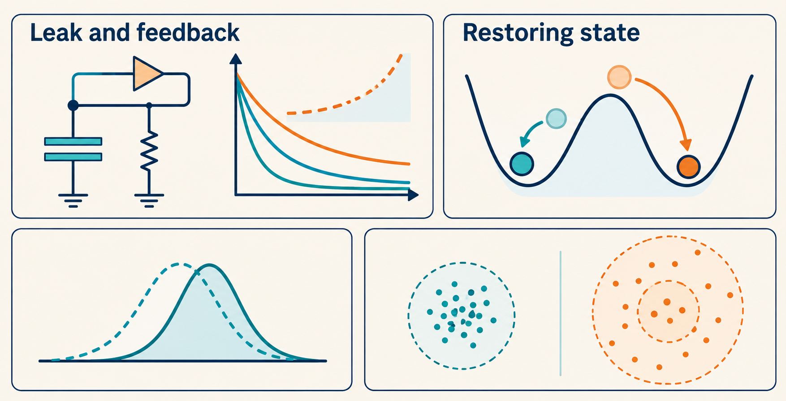
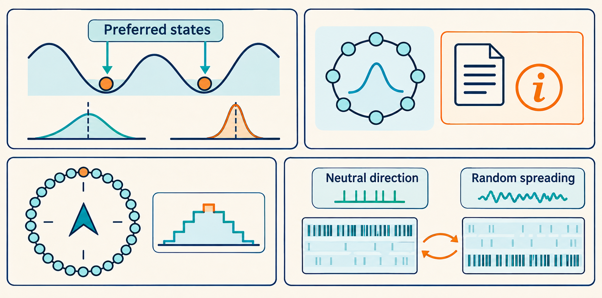

16 Discrete restoration and continuous random wandering produce different memory errors
A circuit can remain active for seconds even when its individual voltages decay in milliseconds. The explanation is feedback: activity supplies new input before old input disappears. But long-lived activity does not by itself identify what is being preserved. This chapter first explains how feedback extends a time scale, then distinguishes a restoring discrete memory from a freely changing continuous one. Measured silicon circuits show why this distinction matters beyond a mathematical model.
A circuit can remain active for seconds even when its individual voltages decay in milliseconds. The explanation is feedback: activity supplies new input before old input disappears. But long-lived activity does not by itself identify what is being preserved. Starting with the preceding flip-flop and ring examples, this chapter follows one disturbance, then asks what happens when noise keeps perturbing the circuit. It explains how feedback extends a time scale and distinguishes a restoring discrete memory from a freely changing continuous one. Measured silicon circuits show why this distinction matters beyond a mathematical model.
Draft diagrams: These unreviewed generated images may contain missing labels, incorrect numbers or misleading relationships. Use the chapter text and sources as the reference.


16.1 Feedback can extend persistence beyond a component’s decay time
Physical mechanism. An isolated capacitor loses a voltage difference when charge leaks through a resistance. In a recurrent circuit, its output can cause an input current that replaces some of that charge. The competition between loss and replacement sets the decay of the collective state. For a neural population, the same competition occurs between decay of synaptic input and input supplied by recurrent spikes.
Let \(u\) be the amplitude of one small activity disturbance around a reference state. A simple linear model is
\[ \tau_s\frac{du}{dt}=-u+g u+I(t). \]
Here \(\tau_s\) is the component decay time, \(g\) is dimensionless recurrent feedback gain, and \(I(t)\) is external drive expressed in the same units as \(u\). The term \(-u\) removes activity, and \(gu\) replaces a fraction of that loss. After the cue ends, \(I=0\). For \(g<1\),
\[ u(t)=u(0)e^{-t/\tau_{\rm eff}},\qquad \tau_{\rm eff}=\frac{\tau_s}{1-g}. \]
Interpretation. Raising \(g\) toward one slows forgetting. At \(g=1\), this ideal linear mode retains every amplitude. For \(g>1\), it grows until effects omitted from the linear model become important. Long persistence requires a balance of physical processes. It is not determined by the storage element’s decay time alone.
Derivation: feedback reduces the net decay rate
With no external input, divide the differential equation by \(\tau_s\): \(du/dt=-(1-g)u/\tau_s\). Multiplying by \(e^{(1-g)t/\tau_s}\) makes the derivative of \(u e^{(1-g)t/\tau_s}\) zero. Its value is the initial amplitude \(u(0)\). Comparing the resulting exponential with \(e^{-t/\tau_{\rm eff}}\) gives the effective time constant above. This is one linear mode near a chosen state, not a full transistor or spiking-network model.
Example: a small gain error changes a long memory time.
Choose \(\tau_s=10\) ms. Gain \(g=0.99\) gives \(\tau_{\rm eff}=1\) s. Changing the gain to \(0.98\) reduces that time to \(0.5\) s. Changing it to \(0.995\) increases it to \(2\) s. The component decay time is unchanged in these three cases. The example predicts sensitivity to adjusting the feedback strength, not a measured lifetime on any chip.
The next issue is which disturbances the feedback corrects. Retaining any amplitude requires a different response from restoring one chosen amplitude.
16.2 A bit corrects small displacements. A continuous memory preserves some of them
Physical mechanism. In a two-state electronic memory, feedback pushes a slightly disturbed state back toward the same stable state. A sufficiently large disturbance can switch it to the other state. In an ideal continuous attractor, disturbances away from the family of memory states decay, but a displacement along that family represents another valid value. The circuit has no restoring signal telling it which earlier value to recover. Seung used this distinction to compare discrete electronic memory with graded eye-position memory.1
First consider one brief push with no further noise. In the flip-flop, a voltage shifted within its original region of attraction returns toward the voltage associated with the selected bit. In the ideal ring, a disturbance that changes the bump’s shape can decay, while a small shift of its position leads to a nearby remembered angle. This is the physical counterpart of the restoring and neutral directions in the Part I linearization. Now ask what changes when random pushes keep arriving instead of occurring only once.
This is a distinction between dynamics, not a division between all digital and all analog machines. Analog transistors can maintain discrete bits. Digital processors can calculate a continuous-state neural model to finite precision. Stored bits may remain correct while repeated numerical updates produce a wandering decoded angle.
Mathematical comparison. Let \(e\) measure a local displacement from one stable state. If restoration has strength \(\kappa>0\) and random perturbations have diffusion coefficient \(D\), a reduced model is
\[ de=-\kappa e\,dt+\sqrt{2D}\,dW_t. \]
The Brownian increment \(dW_t\) has variance \(dt\). Here \(\kappa\) has units of inverse time and \(D\) has units of \(e^2\)/time. Starting exactly at the stable state,
\[ \operatorname{Var}(e(t))=\frac{D}{\kappa}\bigl(1-e^{-2\kappa t}\bigr). \]
For a neutral memory direction with \(\kappa=0\), the corresponding result is \(\operatorname{Var}(e(t))=2Dt\). Restoration limits small local fluctuations. A neutral direction accumulates them.
Derivation: restoring feedback limits local spreading
For displacement \(e(t)\) from the chosen stable state, restoration strength \(\kappa\), and diffusion coefficient \(D\), the linear stochastic equation has solution \(e(t)=\sqrt{2D}\int_0^t e^{-\kappa(t-s)}dW_s\) when \(e(0)=0\). Here \(s\) is the integration time and \(dW_s\) is the Brownian increment at that time. Independent Brownian increments make its variance the integral of the squared weighting function: \(2D\int_0^t e^{-2\kappa(t-s)}ds=D(1-e^{-2\kappa t})/\kappa\). As \(\kappa\) tends to zero, expanding the exponential gives \(2Dt\). This is a local model inside one stable state’s region of attraction. It does not describe rare switches between digital states or estimate a hardware bit-error rate.
Interpretation. Adding restoration to an angle memory can reduce random spread by drawing nearby angles toward preferred positions. That also reduces the set of distinct values retained. Pinning means that imperfections or imposed structure draw a nominally continuous memory toward preferred states. A flat error variance can mean successful retention near one preferred value while other cues have been biased toward it. Both mean error and spread are needed.
For their neural model, Burak and Fiete’s information–diffusion bound is \(D\ge 1/(2\tau^2J)\), where \(D\) is memory diffusion, \(J\) is the internal spike information rate, and \(\tau\) is the synaptic time constant. It is not a lower bound on the error of every electronic memory. A digital device that freezes a number, uses explicit error correction, or changes the noise and readout assumptions poses a different problem. To transfer the bound, match the dynamics, noise, available observations, and time scale first.2
16.3 Silicon experiments distinguish discrete persistence from graded representation
A physical demonstration lets us test whether feedback maintains the intended state despite unequal devices and finite resolution. The following early experiments make different claims and should be read separately.
Massoud and Horiuchi built a head-direction circuit whose localized activity could persist after a cue and move with velocity input. It had 32 bump positions around a circle, a spacing of \(11.25^\circ\). This demonstrates a physical orientation representation with finite resolution. It does not establish an exact continuum of persistent states or a measured Brownian diffusion law.3
Giulioni and colleagues built a recurrent spiking circuit with low and high activity states. Brief stimulation could initiate activity lasting seconds despite millisecond circuit dynamics. Their measurements also examined noise-driven transitions and recovery after disturbance. This is bistability: two locally stable states under the same ongoing conditions. It supplies a physical working-memory example, but its two-state retention is a different task from retaining an arbitrary angle.4
The comparison gives a useful reading rule for current machines: determine what values the network distinguishes, then ask how long and how accurately it preserves them. Neuron count or nonvolatile weight storage cannot answer those questions alone.
Seung, H. S. (1996). How the brain keeps the eyes still. Proceedings of the National Academy of Sciences, 93(23), 13339–13344. DOI. Discussion and nonlinear model, printed p. 13343. ↩︎
Burak, Y., & Fiete, I. R. (2012). Fundamental limits on persistent activity in networks of noisy neurons. Proceedings of the National Academy of Sciences, 109(43), 17645–17650. DOI. See the information-bound derivation and its assumptions. ↩︎
Massoud, T. M., & Horiuchi, T. K. (2011). A neuromorphic VLSI head direction cell system. IEEE Transactions on Circuits and Systems I: Regular Papers, 58(1), 150–163. DOI. Sections V.F–V.G, Figure 21. Author-posted manuscript. ↩︎
Giulioni, M., Camilleri, P., Mattia, M., Dante, V., Braun, J., & Del Giudice, P. (2012). Robust working memory in an asynchronously spiking neural network realized with neuromorphic VLSI. Frontiers in Neuroscience, 5, 149. Results and Methods. Published February 2, 2012. The volume and DOI carry 2011.↩︎